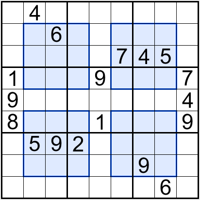
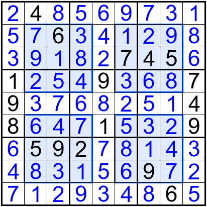
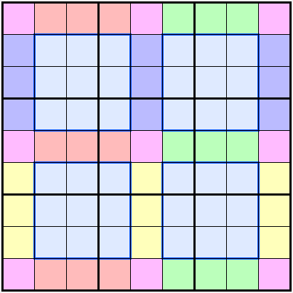
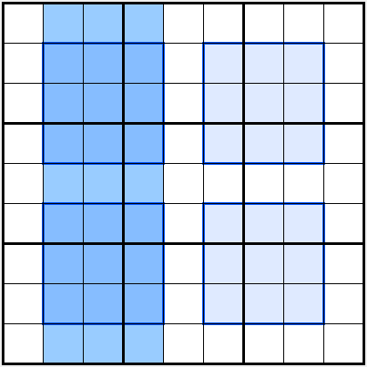

窗口数独的潜规则
窗口数独的简单介绍
除了需要满足标准数独的规则外，还需要使得四个涂色粗线的“窗口”内的数字也都要包括数字1到9各一个。

它的解答如下。

潜规则——窗口 18 宫
窗口数独题有一个潜规则。

如图所示，除了基本的9个宫不重复和4个窗口也满足以外，相同涂色的9个单元格所构成的一个区域内，也不能包括重复。
数数看，恰好有18个“宫”呢！9个基本宫，外加4个窗口宫，再加5个额外“宫”！
原因是，任意观察一组非粉红色的涂色区域。找到这些涂色单元格夹住的两个窗口宫，它们一起所处的三行（或三列）应该包含三组数字1到9。比如我们观察红色涂色区域。算上中间夹住的两个窗口宫，它们所处的三列，一定是三组数字1到9。

不过这27个单元格去掉2个窗口宫后，剩下9格就一定也是一组1到9。
所以，其他的三个非粉红色区域也是这样类似的推导方式。而最终粉红色区域，则是将盘面上所有的涂色区域和4个窗口宫得到的8组数字1到9后，最终剩下来的9格。它们自成一组。

文章评论